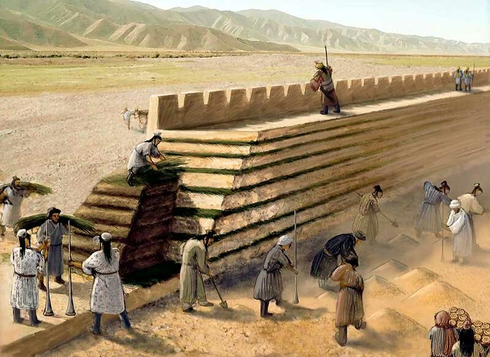
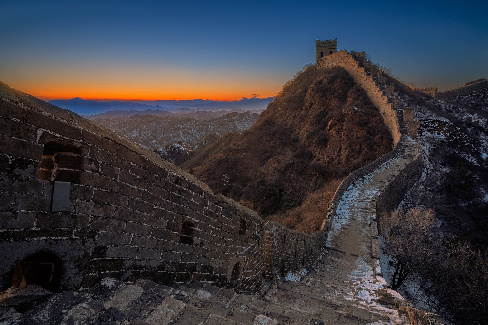
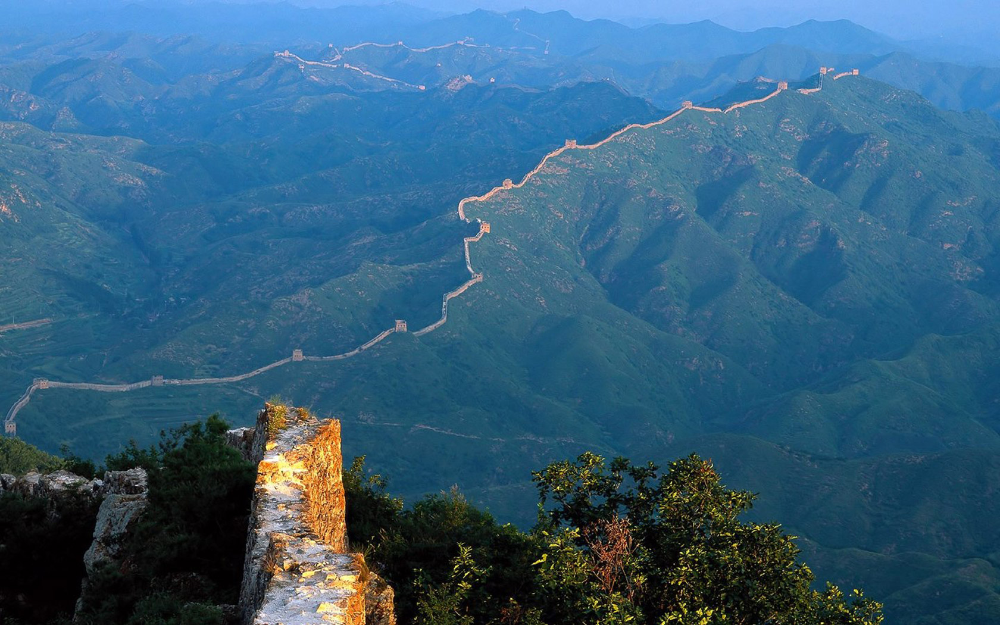
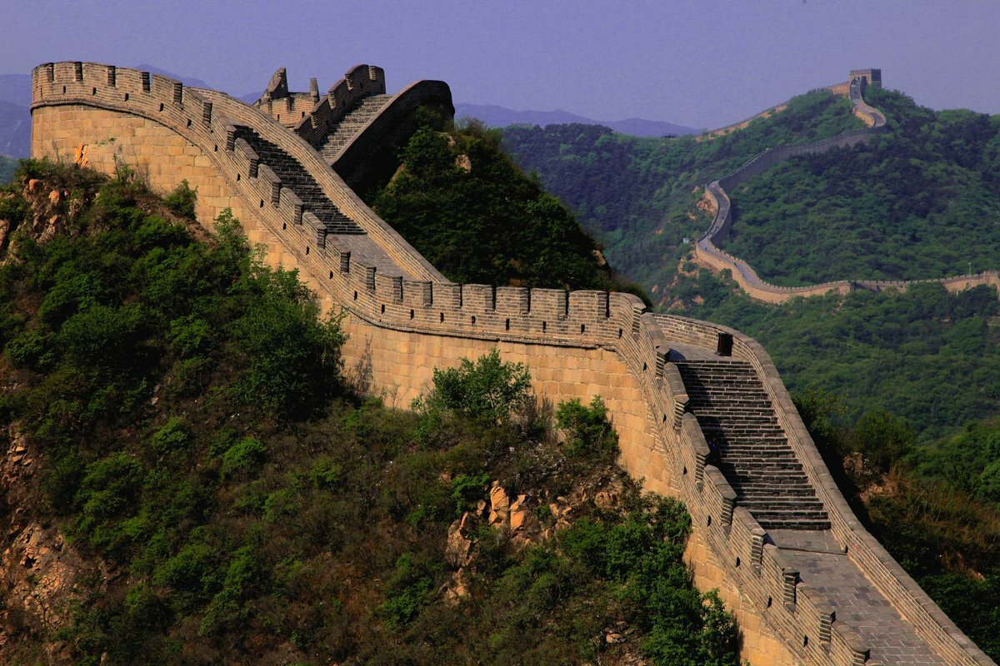
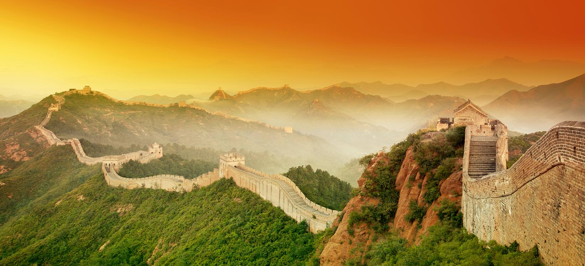
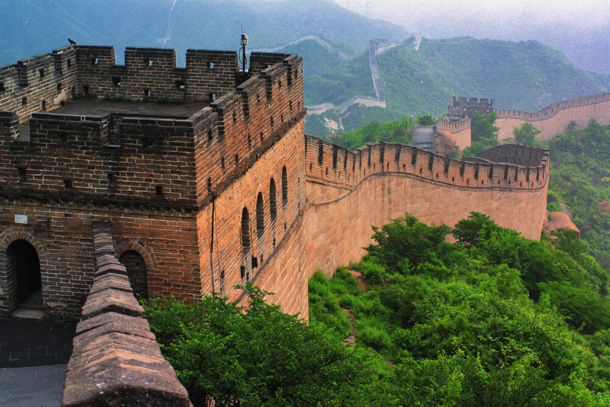
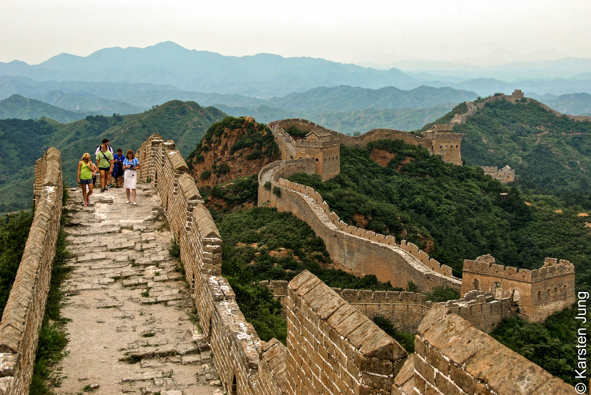
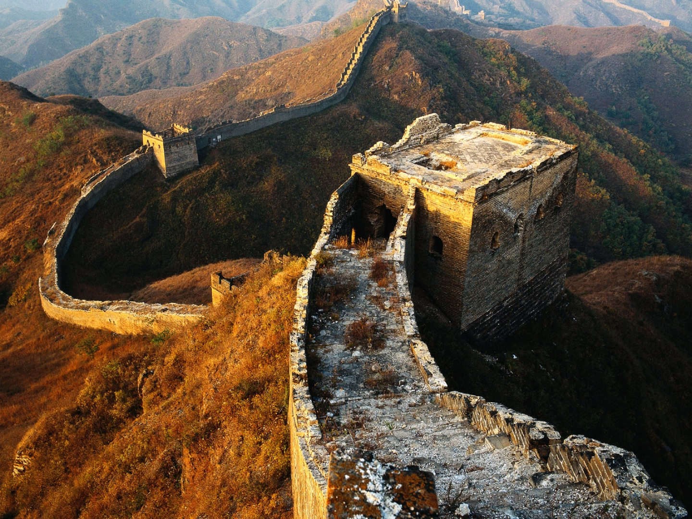
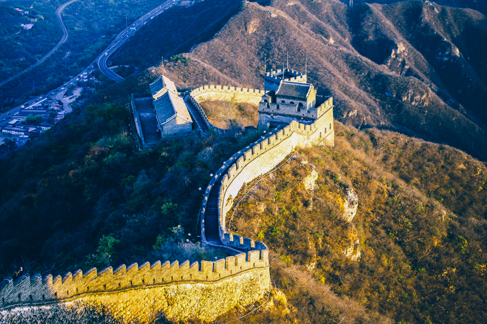

Великая Китайская стена пролегает через северные регионы современного Китая и относится к крупнейшим архитектурным памятникам не только Поднебесной, но и всего мира. Больше того: это самое масштабное сооружение из всех когда-либо возведенных человеком. По официальным данным, общая протяженность Великой Китайской стены с учетом всех ее ответвлений составляет 8851,9 км. Однако некоторые исследователи склонны считать, что на самом деле она почти в два с половиной раза длиннее – 21 тыс.км.Строительство породило много слухов и легенд, лишило жизни сотни тысяч людей и стоило больших финансовых затрат.

В период Сражающихся царств (с V до II века до н. э.) крупные китайские царства с помощью захватнических войн поглощали более мелкие. Так начинало формироваться будущее единое государство. Но пока оно было разрозненным, отдельные царства подвергались набегам древнего кочевого народа хунну, который приходил в Китай с севера. Каждое царство строило защитные ограждения на отдельных участках своих границ. Но в качестве материала служила обычная земля, поэтому оборонительные укрепления со временем стерлись с лица земли и не дошли до наших времен.
Для возведения Великой Китайской стены была задействована пятая часть всего населения страны, это примерно миллион человек за 10 лет основного строительства. В качестве рабочей силы использовали крестьян, солдат, рабов и всех преступников, направляемых сюда в качестве наказания.Разбивались семьи, мужчины теряли жен и детей, а матери сыновей. На стену могли отправить за малейшую провинность. Чтобы набрать туда людей проводились специальные призывы, подобные тому, как набирают воинов для армии. Люди роптали, иногда организовывались бунты, которые подавлялись армией императора. Последний бунт стал последним. Ведь после него правлению династии Мин пришел конец, и стройка остановилась.

Процесс строительства сопровождался многими трудностями, связанными с питанием и тяжелыми условиями труда. Одновременно нужно было накормить и напоить более 300 тыс. человек. Это не всегда удавалось своевременно, поэтому человеческие жертвы исчислялись десятками, даже сотнями тысяч. Существует легенда, что во время постройки всех умерших и погибших строителей укладывали в основание сооружения, поскольку их кости служили хорошим скреплением камней. В народе постройку называют даже «самым длинным кладбищем в мире». Но современные ученые и археологи опровергают версию о массовых захоронениях, вероятно, большинство тел погибших отдавали родственникам.
Ответить на вопрос, сколько лет строили Великую Китайскую стену, однозначно нельзя. Объемное строительство велось в течение 10 лет, а с самого начала до последней достройки прошло около 20 столетий.

По последним подсчетам размеров стены, ее длина составляет 8,85 тыс. км(Для сравнения: экватор Плутона составляет 7,5 тыс. км), при этом протяженность с ответвлениями в километрах и метрах подсчитывали на всех участках, разбросанных по территории Китая. Предположительная общая длина постройки, в том числе не сохранившихся участков, от начала до конца составила бы сегодня 21,19 тыс. км.
Ширина стен (толщина) находится в пределах 5-9 м, при этом у основания она примерно на 1 м шире, чем в верхней части, а средняя высота – около 7-7,5 м, иногда доходит до 10 м, внешняя стена дополнена прямоугольными зубцами высотой до 1,5 м.
При строительстве Великой Китайской стены по плану башни выстраивали в едином стиле и на одинаковом расстоянии друг от друга – 200 м, равном дальности полета стрелы. Но при соединении старых участков с новыми, в гармоничный рисунок стен и башен иногда врезаются башни иного архитектурного решения. На расстоянии 10 км друг от друга башни дополняют сигнальные вышки (высокие башни без внутреннего содержания), с которых дозорные наблюдали за окрестностями и в случае опасности должны были дать следующей вышке сигнал огнем разведенного костра.

Это достаточно спорный вопрос. Сами китайцы не считали, что стена была им нужна. Ведь она многие века забирала на стройку сильных мужчин, большая часть дохода государства шла на ее постройку и обслуживание. История показала, что особой защиты стране она не обеспечивала: кочевники хунну и татаро-монголы с легкостью пересекали заградительную линию на разрушенных участках или по специальным проездам. К тому же многие дозорные пропускали отряды нападающих в надежде спастись или получить вознаграждение, поэтому не подавали сигналов на соседние башни.
В наши годы из Великой Китайской стены сделали символ стойкости китайского народа, создали из нее визитную карточку страны. Каждый побывавший в Китае стремится съездить на экскурсию к доступному участку достопримечательности.

За все время существования Великой стены накопилось множество различных мифов и легенд, которые вводят в заблуждение туристов. Давайте же развеем их прямо сейчас.В 1893 году возник миф, что стену видно из космоса. Но, к сожалению, ни с орбиты Земли, ни с Луны стену не видно. Фото, на которых якобы была изображена стена, оказались фотоснимками близлежащих рек. Космонавты заявили, что невооруженным взглядом Великую Китайскую стену увидеть невозможно.
Обычно говорят, что раствор, используемый для скрепления камней Великой Китайской стены, был сделан из человеческих костей или что людей хоронили внутри Великой Китайской стены, чтобы сделать ее сильнее. Однако раствор был фактически сделан из рисовой муки.
Представление о том, что Великая китайская стена является длинной непрерывной стеной — неверное. Изначально ее образовывала целая сеть стен, часто даже не связанных друг с другом. Позже их объединили, укрепили, снесли и построили заново — при необходимости. Но даже сегодня это скорее комплекс из стен длиной 20 000 километров, нежели единая постройка.
Многие из нас думают, что в Китае Великая стена всегда высоко ценилась и была символом единения и сплоченности народа. Однако это не так. Особое отношение к Великой китайской стене в Китае сформировалось лишь в XX веке — и то, можно даже сказать, под давлением других стран. До этого к Стене относились в лучшем случае довольно безразлично и только восторженные отзывы путешественников заставили власти страны задуматься о том, какую мощь сооружение несет — как в качестве средства пропаганды внутри, так и для укрепления имиджа на мировой арене.

Зная, какие нечеловеческие усилия были приложены при построении стены. можно подумать, что мертвых замуровывали в самой стене. Но это не так. Чаще всего погибших хоронили недалеко от стены.
А что же насчет легенд? Конечно их было огромное множество. Например, история Мэн Цзян Ню, жена фермера, который был вынужден работать на стене во время династии Цинь. Когда она услышала, что ее муж умер во время работы над стеной, она плакала, пока стена не рухнула, обнажив его кости, чтобы она могла похоронить их.Другая легенда известна под названием «Стена слез». Император Цинь Шихуанди получил предсказание, гласившее об успешной постройке стены только в случае, если он замурует в ней человека с именем Ван. Этот человек был найден, убит и захоронен в вертикальном положении. Такая же участь, по легенде, постигала всех погибших при возведении монументального строения, чтобы их души вечно охраняли границы Поднебесной страны.

В строительстве Великой китайской стены за столетия успели поучаствовать миллионы людей и есть все основания полагать, что значительная их часть была преступниками, осужденными по «тяжким» статьям. Работа на строительстве была тяжелой, неблагодарной и даже опасной — считается, что она унесла жизни как минимум 400 тыс. человек.Великая китайская стена продолжает разрушаться — под действием времени, природы и человека. Считается, что в течение 25 лет могут превратиться в руины тысячи ее километров и с этим трудно что-то сделать. В особо ветхом состоянии находятся участки Стены в провинции Ганьсу.


В продолжение к предыдщему факту темной истории стены можно добавить, что члены семей тех, кто погиб, работая на Великой Китайской стене, несли гроб, на вершине которого был заперт белый петух в клетке. Крик петуха должен был не дать уснуть духу умершего человека, пока они не перейдут через стену; в противном случае семья боялась, что дух сбежит и будет вечно бродить вдоль стены.В экскурсии в гробницы есть небольшой минус. Вас не пустят в саму гробницу. Из тринадцати гробниц династии Мин вскрыта только одна, и в ходе этой экскурсии ее туристам не показывают. Погребальный комплекс императоров Мин очень большой, он представляет собой не одно здание, а целую долину с воротами, зданиями, парком и статуями. Тут придется очень много ходить.
Участок стены Мутяньюй немного интереснее, чем Бадалин. Он древнее, стена тут имеет бойницы с обеих сторон, и этот участок лучше сохранился. При одинаковой цене эта экскурсия интереснее, чем первая.
Больше всего туристов смущает посещение «Подземного дворца», так как непонятно, что это. «Подземный дворец» находится в составе тех же гробниц императоров династии Мин, к которым можно прокатиться в составе первой экскурсии. Из тринадцати гробниц археологами была вскрыта только одна, и это именно гробница императора Ванли (сама гробница называется Данлин). Внутрь этой гробницы вы сможете попасть в ходе экскурсии, она огромна, поэтому и названа «Подземным дворцом».
Отличный вариант для того случая, если у вас в Пекине есть только один свободный день (или вообще один день), а вам нужно быстро посмотреть основные достопримечательности столицы Китая.
Вас привезут на площадь Тяньаньмэнь, где вы сможете походить 30 минут. Потом 2 часа посмотрите Запретный город, и после вас повезут на Великую Китайскую стену. Вечером вы окажетесь в своем отеле в Пекине с полным осознанием того, что все самые важные достопримечательности Китая вы видели.